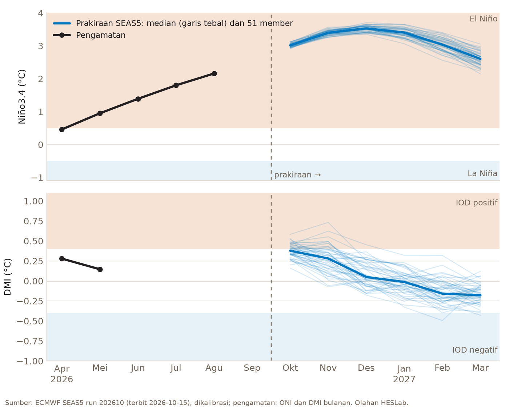
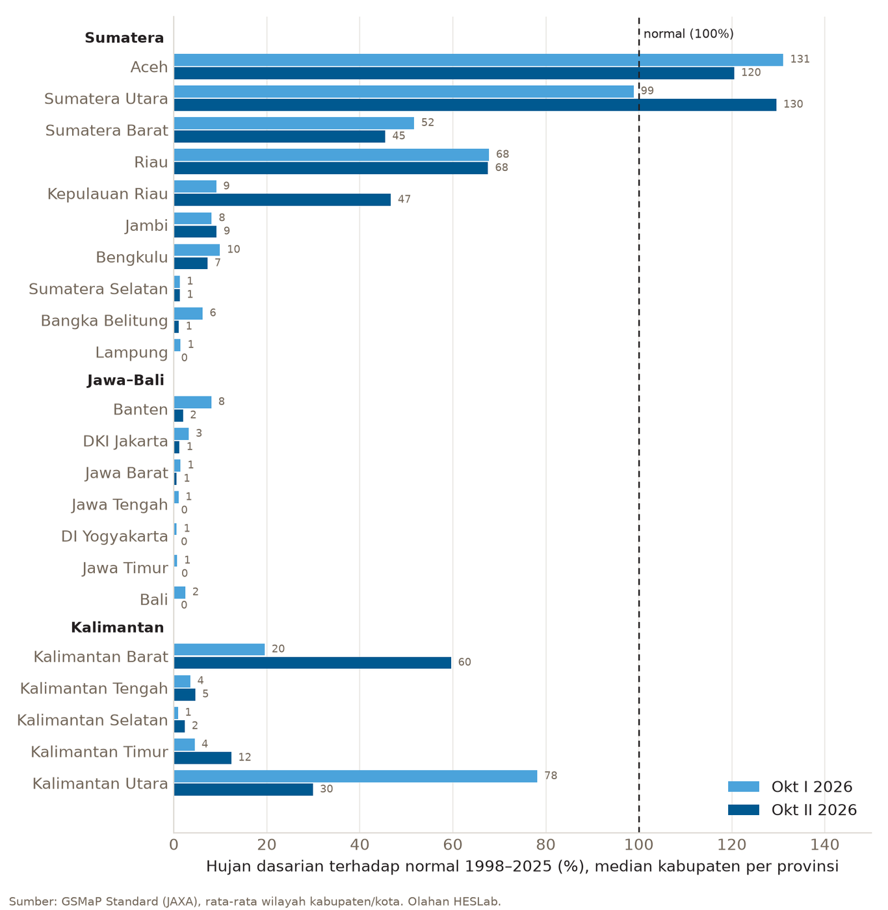

Oktober 2026 memperlihatkan dua wajah Indonesia. Di Sumatera bagian utara dan barat hujan mulai turun, bahkan menimbulkan banjir di Aceh Tamiang, Langkat, Binjai, Simalungun, dan Kota Padang. Pada saat yang sama, kebakaran hutan dan lahan masih berlanjut di Kalimantan Tengah, Sumatera Selatan, dan Jambi, dan asapnya masih menyelimuti Palembang. Tulisan ini membaca keadaan itu dari dua sisi: prakiraan iklim musiman ECMWF untuk Samudra Pasifik dan Hindia, serta pengamatan hujan satelit di HESLab Portal.
Dua indeks yang diikuti
Niño3.4 adalah anomali suhu muka laut di Pasifik tengah. Nilai di atas +0,5 °C berarti El Niño, di bawah −0,5 °C berarti La Niña. Saat El Niño, pusat awan hujan bergeser ke Pasifik tengah sehingga sebagian besar Indonesia lebih kering dari biasanya.
DMI (Dipole Mode Index) adalah selisih anomali suhu muka laut antara Samudra Hindia bagian barat dan bagian timur dekat Sumatera. Nilai di atas +0,4 °C berarti IOD positif: laut di barat Sumatera lebih dingin, penguapan dan awan hujan di sisi barat Indonesia berkurang. Nilai di bawah −0,4 °C berarti IOD negatif, kebalikannya.
Ketika El Niño dan IOD positif terjadi bersamaan, keduanya saling menguatkan dan kemarau menjadi lebih panjang dan kering.
Apa kata prakiraan ECMWF
Prakiraan diambil dari model musiman ECMWF SEAS5 yang dijalankan Oktober 2026 (terbit 15 Oktober 2026) dengan 51 member. Nilainya sudah dikalibrasi terhadap pengamatan, dengan klimatologi 1991–2020, dan disajikan di halaman Climate HESLab Portal.

| Bulan | Niño3.4 (°C) | Peluang El Niño | DMI (°C) | Keadaan IOD |
|---|---|---|---|---|
| Okt 2026 | +3,02 | 100% | +0,38 | peluang IOD positif 39% |
| Nov 2026 | +3,40 | 100% | +0,28 | peluang IOD positif 20% |
| Des 2026 | +3,52 | 100% | +0,08 | 98% netral |
| Jan 2027 | +3,40 | 100% | −0,02 | netral |
| Feb 2027 | +3,04 | 100% | −0,14 | netral |
| Mar 2027 | +2,60 | 100% | −0,17 | netral |
Nilai pada tabel adalah rata-rata 51 member.
Dua hal terbaca jelas. Pertama, El Niño sangat kuat dan belum akan melemah dalam waktu dekat. Semua member berada di atas ambang El Niño sampai Maret 2027, dengan puncak sekitar Desember 2026. Sebagai pembanding, indeks ONI pengamatan (rata-rata tiga bulan) naik dari 0,46 pada April menjadi 2,16 pada Agustus 2026.
Kedua, IOD positif sedang melemah menuju netral. DMI masih +0,38 pada Oktober, mendekati ambang, lalu turun dan diprakirakan netral mulai Desember.
Apa yang terlihat di data hujan
Hujan dasarian (sepuluh harian) dari satelit GSMaP Standard (JAXA) dirata-ratakan per kabupaten/kota, lalu dibandingkan dengan rata-rata dasarian yang sama tahun 1998–2025. Gambar di bawah menunjukkan median kabupaten per provinsi untuk Oktober dasarian I (1–10) dan II (11–20).

Gambarannya tidak seragam:
- Sumatera bagian utara sudah basah. Aceh (120–131% dari normal) dan Sumatera Utara (99–130%) berada di sekitar atau di atas normal. Riau dan Sumatera Barat setengah sampai dua pertiga normal.
- Kalimantan Barat dan Kepulauan Riau mulai pulih. Kalimantan Barat naik dari 20% pada dasarian I menjadi 60% pada dasarian II, Kepulauan Riau dari 9% menjadi 47%.
- Sumatera bagian selatan dan Kalimantan Tengah–Selatan masih kering. Jambi, Bengkulu, Sumatera Selatan, Lampung, Kalimantan Tengah, dan Kalimantan Selatan hanya menerima 0–10% dari hujan normalnya.
- Jawa dan Bali hampir tanpa hujan, sekitar 0–8% dari normal. Demikian juga Sulawesi, Nusa Tenggara, dan Maluku (median sekitar 1–4% pada dasarian II).
Hasil ini diperiksa silang dengan produk GSMaP NRT. Kedua produk memberi gambaran yang sama, sehingga angka mendekati nol bukan kesalahan salah satu produk. Perlu dicatat, GSMaP cenderung melewatkan hujan ringan, jadi 0% berarti hampir tidak ada hujan yang terdeteksi, bukan nol mutlak.
Kebakaran yang masih berlanjut
Sampai 19 Oktober 2026, BNPB mencatat 1.024 hektare lahan terbakar yang ditangani satuan tugas gabungan di enam provinsi prioritas. Baru 454 hektare yang padam (Antara, 20 Oktober). Tabel berikut menyandingkan data itu dengan hujan dasarian II Oktober dari GSMaP:
| Provinsi | Lahan ditangani (ha) | Belum padam (ha) | Hujan Okt II (% normal) |
|---|---|---|---|
| Kalimantan Tengah | 452,5 | 389,4 | 5% |
| Sumatera Selatan | 401,7 | 108,5 | 1% |
| Jambi | 96,5 | 64,5 | 9% |
| Kalimantan Selatan | 58,5 | 7,5 | 2% |
| Kalimantan Barat | 11,9 | 0,2 | 60% |
| Riau | 3,3 | 0 | 68% |
Polanya jelas: provinsi yang apinya belum padam adalah provinsi yang hampir tidak menerima hujan. Kalimantan Barat dan Riau, yang hujannya sudah lebih dari setengah normal, hampir tidak menyisakan api.
Pantauan titik panas Kementerian Kehutanan melalui SiPongi menunjukkan hal yang sama. Pada 10 Oktober tercatat 288 titik panas berkepercayaan tinggi di Kalimantan Tengah dan 60 di Sumatera Selatan, sedangkan Riau nihil (Kemenhut, 11 Oktober). Titik panas adalah anomali suhu permukaan yang terdeteksi satelit, bukan jumlah kejadian kebakaran; satu kebakaran dapat terdeteksi sebagai beberapa titik.
Asapnya terasa sampai ke kota. Pada 8 Oktober, BNPB melaporkan kualitas udara di sejumlah wilayah Palembang dalam kategori berbahaya dengan jarak pandang turun sampai 400 meter (BNPB), dan kabut asap pekat masih menyelimuti kota itu pada 21 Oktober (CNN Indonesia).
Provinsi yang masih menerima kurang dari sepersepuluh hujan normalnya, yaitu Jambi, Sumatera Selatan, Kalimantan Tengah, dan Kalimantan Selatan, adalah provinsi dengan lahan gambut luas. Gambut yang kering mudah terbakar dan sulit dipadamkan karena api menjalar di bawah permukaan. Selama hujan belum cukup untuk membasahi kembali gambut, risiko kebakaran tetap tinggi.
Hujan dan banjir di Sumatera
Laporan harian BNPB mencatat beberapa banjir di Sumatera pada pertengahan Oktober 2026:
- Kota Padang, 10 Oktober. Banjir bandang di Kecamatan Kuranji, Koto Tangah, dan Nanggalo setelah hujan lebat dan jebolnya tanggul sungai di Lapau Munggu. Sekitar 498 jiwa terdampak dan 120 rumah terendam (BNPB, 11 Oktober).
- Aceh Tamiang, 10–11 Oktober. Hujan lebat merendam empat kecamatan; 222 KK mengungsi (BNPB, 12 Oktober).
- Langkat, 11 Oktober. Sungai meluap dan tanggul Paya Bunder jebol di Besitang dan tiga kecamatan lain; 3.439 jiwa terdampak dan sekitar 310 KK mengungsi. Kebun sawit ikut terendam (BNPB, 13 Oktober; Kompas).
- Kota Binjai, 12 Oktober. Sungai Bingai naik sampai sekitar 3,1 m; 4.554 jiwa terdampak (BNPB, 13 Oktober).
- Simalungun, 16 Oktober. Sungai Parpayakan dan Sordang meluap setelah hujan beberapa hari; 128 KK terdampak (BNPB, 17 Oktober).
Data GSMaP untuk kabupaten/kota tersebut sejalan dengan laporan itu:
| Kabupaten/kota | Okt I (mm) | % normal | Okt II (mm) | % normal |
|---|---|---|---|---|
| Aceh Tamiang | 92 | 84% | 200 | 173% |
| Langkat | 149 | 132% | 163 | 131% |
| Kota Binjai | 149 | 113% | 153 | 93% |
| Simalungun | 92 | 101% | 193 | 203% |
| Kota Medan | 130 | 109% | 163 | 109% |
| Kota Padang | 22 | 36% | 50 | 71% |
Di Aceh Tamiang dan Simalungun, hujan dasarian II hampir dua kali normal. Kota Medan sendiri menerima hujan sedikit di atas normal, tetapi kami tidak menemukan laporan banjir di Kota Medan pada periode ini; banjir terjadi di daerah tetangganya, Langkat dan Binjai.
Kota Padang menunjukkan hal yang berbeda: jumlah hujan sepuluh harinya justru di bawah normal. Banjir bandang di sana dipicu oleh hujan lebat dalam waktu singkat dan jebolnya tanggul, bukan oleh dasarian yang basah. Satelit dengan resolusi sekitar 10 km juga dapat meremehkan hujan lebat yang sangat lokal di lereng Bukit Barisan. Ini mengingatkan bahwa banjir bisa terjadi di musim yang secara umum masih kering.
Hujan yang turun di Sumatera bagian utara dan Kalimantan Barat sejalan dengan pola peralihan musim yang biasa dimulai dari wilayah dekat khatulistiwa. Melemahnya IOD positif mengurangi tekanan kering dari Samudra Hindia sehingga awan hujan di sisi barat lebih mudah terbentuk. Namun IOD bukan penyebab langsung sebuah banjir: banjir ditentukan oleh hujan lebat lokal, keadaan daerah aliran sungai, dan kapasitas saluran. Prakiraan juga menunjukkan DMI baru netral pada Desember, sedangkan pada Oktober–November IOD masih sedikit positif.
Ke depan
Dengan El Niño yang diprakirakan memuncak pada Desember 2026 dan tetap kuat sampai Maret 2027, wilayah di selatan khatulistiwa, termasuk Jawa, Bali, dan Nusa Tenggara, perlu mewaspadai awal musim hujan yang terlambat atau hujan yang lebih sedikit dari biasanya. Netralnya IOD mengurangi satu faktor pengering, tetapi tidak menghapus pengaruh El Niño.
Prakiraan musiman adalah peluang, bukan kepastian, dan diperbarui setiap bulan. Perkembangan hujan dapat diikuti setiap hari di halaman Rainfall dan prakiraan iklim di halaman Climate HESLab Portal.
Data
- Prakiraan Niño3.4 dan DMI: ECMWF SEAS5, run Oktober 2026, dikalibrasi, diolah HESLab.
- Hujan: GSMaP Standard (JAXA), rata-rata wilayah kabupaten/kota, normal 1998–2025, diolah HESLab.
- Kejadian banjir: laporan harian Perkembangan Situasi dan Penanganan Bencana BNPB, 11–17 Oktober 2026, dan Kompas.
- Kebakaran: BNPB (data sampai 19 Oktober 2026, melalui Antara), SiPongi Kementerian Kehutanan, dan CNN Indonesia.